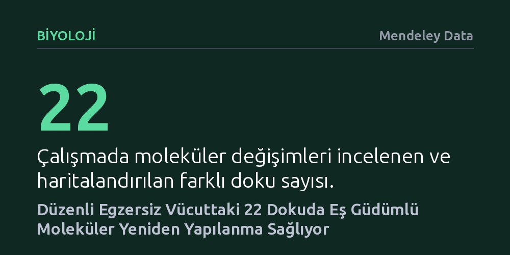

BIYOLOJI · Mendeley Data · 2026-10-18
Araştırmacılar, düzenli egzersizin farklı organlardaki moleküler etkilerini haritalandırmak amacıyla 22 dokudan oluşan kapsamlı bir çoklu omik atlası hazırladı. Sonuçlar, uzun süreli egzersizin vücut genelinde gen, protein ve metabolizma düzeyinde doku ve cinsiyete bağlı eş güdümlü bir yeniden yapılanma sağladığını gösterdi.
Egzersizin yalnızca kasları çalıştırmakla kalmayıp vücuttaki 22 farklı dokuda gen, protein ve metabolizma seviyesinde eş zamanlı sistemik bir dönüşüm başlattığını gösteriyor.

Düzenli egzersizin kalp sağlığını güçlendirdiği, kas kütlesini artırdığı ve genel zindeliğe katkıda bulunduğu uzun zamandır biliniyor. Ancak spor yaptığımızda veya tempolu bir yürüyüşe çıktığımızda biyolojik sistemlerimizde tam olarak nelerin değiştiği sorusu, çoğunlukla yalnızca kas dokusu ve kalple sınırlı bir bakış açısıyla ele alınıyordu. Oysa fiziksel aktivite, sadece hareket eden kasları değil, karaciğerden böbreklere, yağ dokusundan diğer hayati organlara kadar tüm vücudu etkileyen sistemik bir süreçtir.
Bilim insanlarının yanıt aradığı asıl soru şuydu: Uzun süreli ve düzenli egzersiz, vücudun genetik, epigenetik ve biyokimyasal mekanizmalarında dokular arasında nasıl bir koordinasyon yaratır? Bu sorunun yanıtı, fiziksel aktivitenin sağlığı koruyucu etkilerinin hangi moleküler köprüler üzerinden gerçekleştiğini anlamak ve gelecekte kişiye özel sağlık yaklaşımları geliştirebilmek açısından büyük önem taşıyor.
Araştırmacılar bu soruyu yanıtlamak için tek bir biyolojik belirtece veya sadece birkaç organa odaklanmak yerine, 'çoklu omik' olarak adlandırılan geniş kapsamlı bir analiz yöntemine başvurdu. Kronik, yani uzun süreli ve düzenli egzersiz uygulanan deneklerin vücudundan 22 farklı doku örneği toplandı. Bu yaklaşım, egzersizin beden genelindeki haritasını çıkarmayı hedefleyen son derece kapsamlı ve sistemli bir tarama meydana getirdi.
Çalışmada tek bir ölçüm tekniğiyle yetinilmedi; genlerin ne kadar aktif olduğunu gösteren transkriptomik, gen ifadesini yönlendiren kimyasal etiketleri inceleyen epigenetik, işlevsel molekülleri sayan proteomik ve kimyasal süreçlerin çıktılarını izleyen metabolomik analizler bir arada yürütüldü. Ayrıca deneyler hem zamana hem de cinsiyete göre ayrıştırılarak, kadın ve erkek biyolojisinin uzun süreli egzersize verdiği moleküler yanıtların benzerlikleri ve farklılıkları da mercek altına alındı.
Elde edilen moleküler atlas, uzun süreli egzersizin vücutta parçalı değil, dokular arasında son derece uyumlu ve eş güdümlü bir yeniden yapılanmaya yol açtığını gösterdi. Makalede belirtildiği gibi, 'atlas, vücut genelinde eş güdümlü transkriptomik, epigenetik, proteomik ve metabolik yeniden şekillenmeyi ortaya koyuyor'. Bu durum, egzersizin etkisinin sadece kas lifleriyle sınırlı kalmadığını, incelenen 22 dokunun tamamında hücresel düzeyde bir yeniden programlama başlattığını kanıtlıyor.
Araştırmanın öne çıkan bir diğer bulgusu ise iskelet kasındaki hücre tiplerine özgü epigenetik değişimler oldu. Egzersiz, kas dokusunu oluşturan farklı hücre türlerinde genlerin çalışma biçimini belirleyen epigenetik işaretleri yeniden düzenliyor. Dahası, bu moleküler uyumların hem zamana hem de cinsiyete bağlı olarak farklı dinamikler sergilediği saptandı; yani aynı egzersiz protokolü dokuya ve cinsiyete göre kendine has moleküler zamanlamalarla işliyor.
Bu çalışma, egzersizin biyolojik faydalarının neden bu kadar geniş bir yelpazeye yayıldığını anlamamıza temel bir zemin hazırlıyor. Egzersizin hücresel düzeyde yalnızca enerji harcamak anlamına gelmediğini; organlar arasında gen, protein ve metabolit alışverişini düzenleyen devasa bir biyolojik iletişim ağı kurduğunu net bir biçimde belgeliyor.
Yine de sonuçları değerlendirirken temkinli olmak gerekir. Bu çalışma geniş bir moleküler haritalama sunmakla birlikte, tespit edilen her bir moleküler değişimin doğrudan sağlık çıktısı yaratıp yaratmadığı veya insanlarda birebir aynı şekilde işleyip işlemediği henüz klinik düzeyde test edilmemiştir. Ancak 22 dokuda eş zamanlı olarak gözlenen bu kapsamlı uyum, egzersizin tüm bedeni kapsayan sistemik bir koruyucu mekanizma olduğunu güçlü biçimde destekliyor.